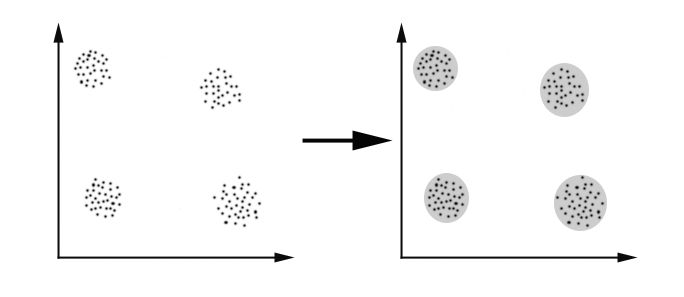
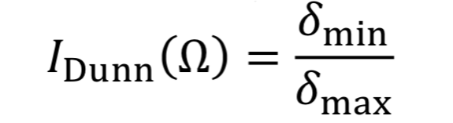
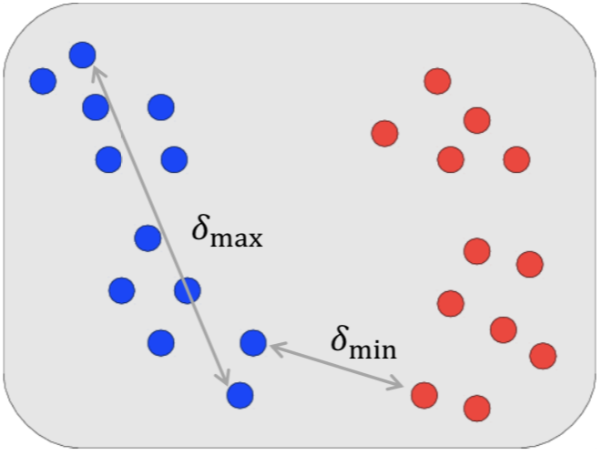
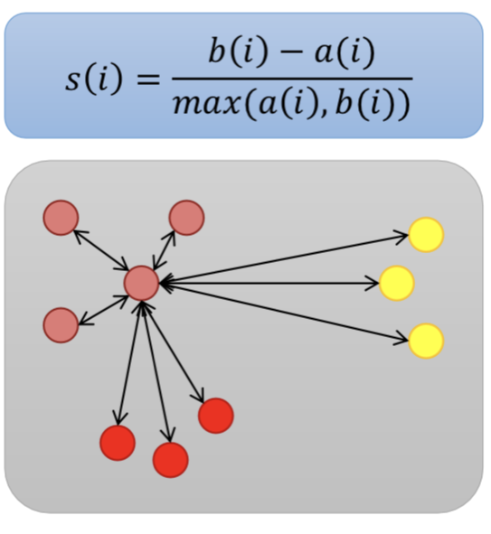
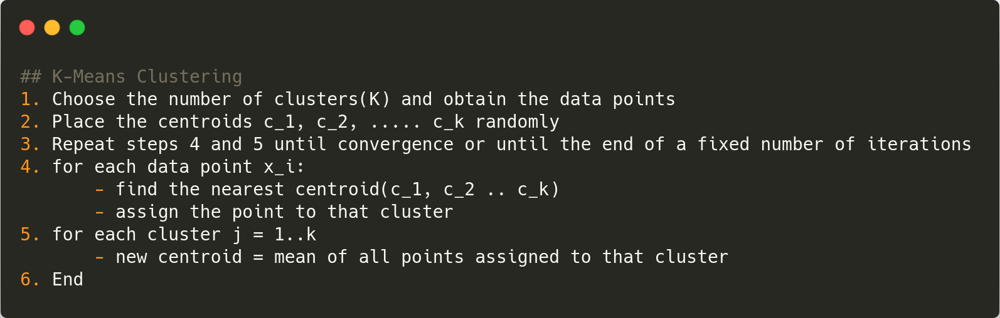

Ich bin furchtbar unorganisiert und doch macht es mir großen Spaß mir systeme auszudenken die Ordnung schaffen. Das Schöne an Machine Learning ist, dass die Modelle dies selbstständig tun, besonders beim unsupervised Learning. Einer meiner Lieblingsalgorithmen dazu ist der K-Means Algorithmus, den ich durch das Frühstudium an der Uni Koblenz-Landau kennenlernen durfte. Um meine Faszination mit diesem Feld ein wenig zu teilen, habe ich mich dazu entschlossen es zum Thema meiner Ausarbeitung der 13_II im IV Kurs zu machen. Ich möchte also den K-Means Algorithmus erklären. Um seine Schönheit zu verstehen, muss man jedoch zunächst einige andere Dinge verstehen.
Clustering
Clustering ist die Aufgabe, die Datenpunkte in mehrere Gruppen zu unterteilen, sodass Datenpunkte in denselben Gruppen anderen Datenpunkten in derselben Gruppe ähnlicher sind als denen in anderen Gruppen. Mit einfachen Worten, das Ziel ist es, Datenpunkte mit ähnlichen Merkmalen zu finden und sie in Cluster einzuteilen. Es geht darum, eine Struktur in einer Sammlung unbeschrifteter Daten zu finden. Somit sollten die Elemente (Radius, Farbe, Ursprung, etc.), die einen Datenpunkt ausmachen bereits beim Formulieren des Problems so gewählt werden, dass sie möglichst differenzierbar sind.
Dunn-Index

Dank mathematischer Beschreibungen können wir relative Aussagen über die aus Algorithmen entstanden Cluster, so hätten wir z. B. den Dunn-Index der Aussage trifft über die Abstände zwischen Clustern. Er wird errechnet, indem man den minimalen Abstand eines Punktes des Clusters zu einem Punkt eines fremden Clusters durch den maximalen Abstand zweier Punkte im selben Cluster teilt. Der sagt uns aber nur etwas über das Verhältnis der Cluster zueinander, wollen wir z.b. sehen wie es in einem Cluster aussieht, so brauchen wir den folgenden.
Silhouetten-Koeffizient
Er ist leider ein wenig aufwendiger zu rechnen als der Dunn-Index, ist jedoch auch aussagekräftiger. Der Silhouetten-Koeffizient sagt uns, wie gut ein Objekt klassifiziert wurde. Hierzu ermitteln wir den Durchschnitt der Abstände aller Datenpunkte im Cluster des zu untersuchenden Objekts (i). Nennen wir dies der Einfachheit halber mal A(i). Anschließend ermitteln wir den durchschnittlichen Abstand zu Objekten anderer Cluster und nehmen davon den Cluster/Abstand der am kleinsten ist, da das zu untersuchende Objekt den Objekten des nächsten Clusters am ähnlichsten sein sollte. Nennen wir diesen Wert mal B(i). Um den Koeffizient zu erhalten, rechnen wir B(i) - A(i) und teilen ihn durch den größeren Wert von A und B um das Ergebnis zu normalisieren. Wir erhalten einen Wert zwischen -1 und 1. Doch was sagt uns das jetzt? Nun, ist der Wert nah an der 1 kann man sich auf die Schulter klopfen. Der Abstand zwischen den Clustern ist im Vergleich mit dem Abstand innerhalb eines Clusters sehr klein. Sie haben das Ziel erreicht. Sollte der Silhouetten-Koeffizient um die 0 liegen, ist A(i) ≈ B(i), somit kann man den Clustern bzw. dem beobachteten Objekt keine Bedeutung abgewinnen. -1 wäre das schlechteste, kurz, dein Algorithmus hat ein Problem und man kann eigentlich wieder von vorne anfangen.
Probleme
Beim Clustering gibt es eine Reihe von Problemen. Darunter:
- Der Umgang mit einer großen Anzahl von Datenelementen kann aufgrund der zeitlichen Komplexität problematisch sein.
- Die Wirksamkeit der Methode hängt von der Definition von „Entfernung“ ab (für entfernungsbasiertes Clustering). Wenn es kein offensichtliches Abstandsmaß gibt, müssen wir es "definieren", was insbesondere in mehrdimensionalen Räumen nicht immer einfach ist.
- Das Ergebnis des Clustering-Algorithmus kann unterschiedlich interpretiert werden.
Sehr unterhaltsam sind dabei Probleme der Ähnlichkeit. Wie legt man fest, wie ähnlich sich etwas ist?
K-Means Algorithm
Der K-Means Algorithmus baut auf der Erkenntnis, dass sich jeder Punkt in einem Cluster nahe der Mitte dieses Clusters befinden sollte. Erreichen können wir dies so:
- Zuerst wählen wir k, die Anzahl der Cluster, die wir in den Daten finden möchten.
- Dann werden die Zentren dieser k Cluster, die als Zentroide bezeichnet werden, auf irgendeine Weise initialisiert.
ann werden die Zentren dieser k Cluster, die als Zentroide bezeichnet werden, auf irgendeine Weise initialisiert.
- Im ersten Schritt weisen wir jeden Punkt in den Daten dem Cluster zu, dessen Schwerpunkt (Zentroid) ihm am nächsten liegt.
- Im zweiten Schritt berechnen wir die Position jedes Schwerpunkts als Mittelwert (Mitte) aller Punkte, die seinem Cluster zugewiesen sind.
Wir wiederholen diese Schritte dann, bis sich die Zentroide nicht mehr bewegen, oder bis die Punkte aufhören, Cluster zu wechseln.
Für Menschen die Dinge besser verstehen wenn sie in einem IDE stehen oder in Codeform sind:
Interaktives Beispiel
User am Telefon sollten das Handy quer nehmen, um optimal mit der Grafik zu interagieren.
Gute Eigenschaften
Aus der Implementierung und dem Aufbau des Algorithmus lassen sich folgende positive Eigenschaften ableiten:
- Relativ einfach zu implementieren.
- Skaliert gut auf große Datenmengen.
- Passt sich leicht neuen Beispielen an.
- Verallgemeinert sich auf Cluster unterschiedlicher Formen und Größen, z. B. elliptische Cluster.
Probleme
Natürlich ist auch der K-Means Algorithmus nicht fehlerfrei, weit davon entfernt sogar. Darunter:
- Die Anzahl der Cluster muss im Voraus festgelegt werden. Der K-Means-Algorithmus kann nicht erraten, wie viele Cluster in den Daten vorhanden sind. Die Bestimmung der Anzahl von Clustern kann eine herausfordernde Aufgabe sein.
- Kann nur lineare Grenzen zeichnen. Wenn es eine nicht lineare Struktur gibt, die Gruppen in den Daten trennt, ist k-means keine gute Wahl.
- Verlangsamt sich mit zunehmender Anzahl von Abtastwerten, da der k-means-Algorithmus bei jedem Schritt auf alle Datenpunkte zugreift und Entfernungen berechnet. Eine alternative Möglichkeit besteht darin, eine Teilmenge von Datenpunkten zu verwenden, um die Position von Schwerpunkten zu aktualisieren. Es ist bekannt, dass der k-Means Algorithmus eine Zeitkomplexität von O (n 2) aufweist, wobei n die Eingangsdatengröße ist. Diese quadratische Komplexität verhindert, dass der Algorithmus in großen Anwendungen effektiv eingesetzt wird.
- Empfindlich gegen Outliner (Daten die sehr weit von anderen entfernt liegen)